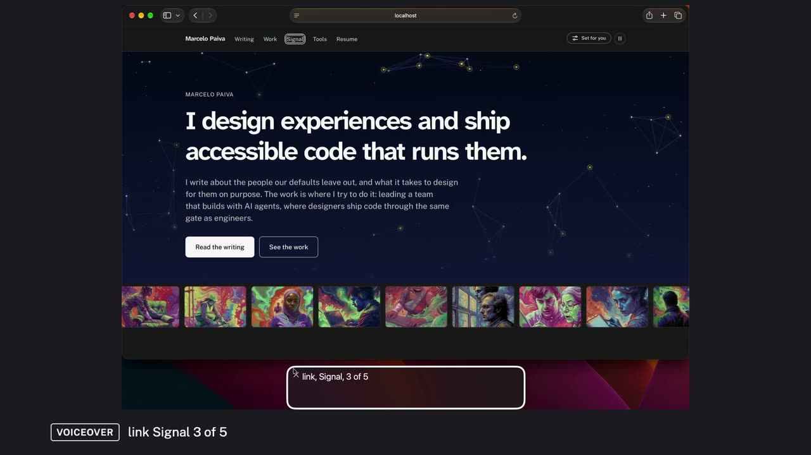
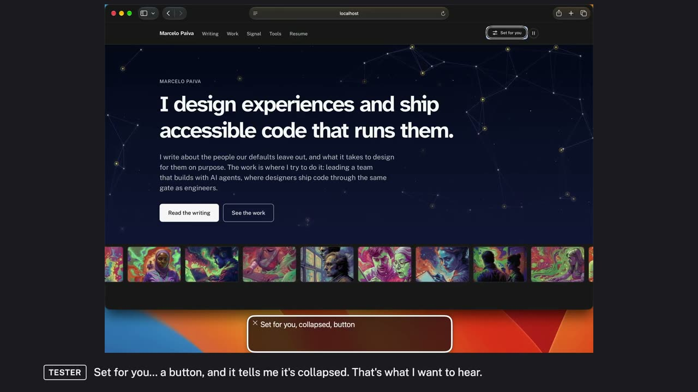
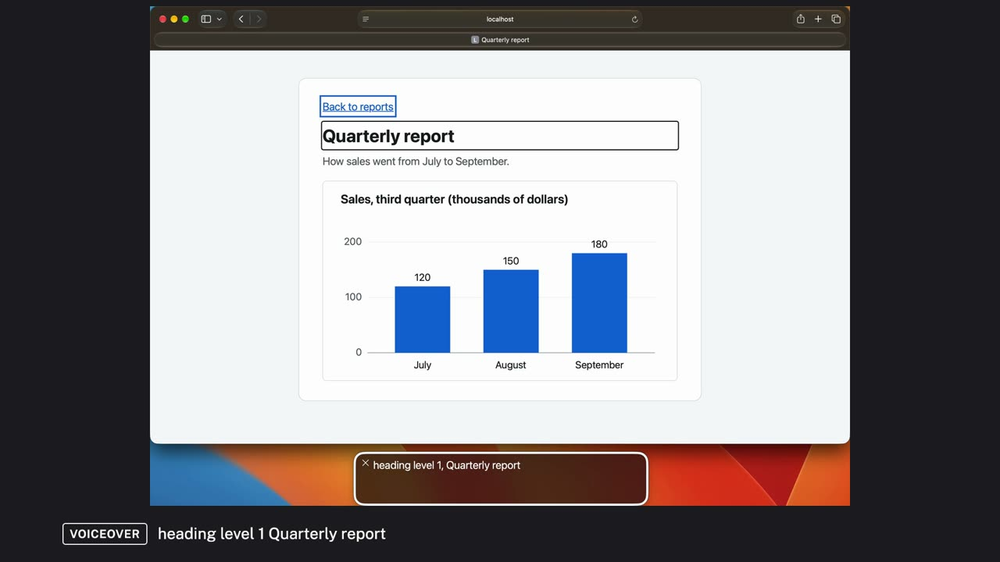

Examples
Each example is a first-pass accessibility test made with the a11y-demo skill: real VoiceOver in Safari, filmed and narrated, with every barrier named by its WCAG criterion, fixed, and heard again. Each one is a report you can read, with its videos, captions and transcripts.
All examples
-

Testing the home page with VoiceOver
A first-pass screen-reader test of a real personal site's home page, in short videos with one narrator: the structure, the keyboard, a reading pass, the controls and a task, with what it found, what was fixed, and what still needs testing with people with disabilities.
10 videos, about 19 minutes, captioned, with transcripts. 6 findings: 3 fixed, 1 fix in review, 1 open, 1 not the page.
Criteria: WCAG 4.1.2 Name, Role, Value · WCAG 4.1.3 Status Messages
Read the report and watch the videos · Scenes, lines and films on GitHub
-

Testing the home page with VoiceOver, told by two voices
The same home-page test told by two voices: a tester who uses VoiceOver and says what she hears, and a reviewer who names each WCAG criterion, says why it matters and explains the fix.
9 videos, about 21 minutes, captioned, with transcripts. 6 findings: 3 fixed, 1 fix in review, 1 open, 1 not the page.
Criteria: WCAG 4.1.2 Name, Role, Value · WCAG 4.1.3 Status Messages
Read the report and watch the videos · Scenes, lines and films on GitHub
-

Three WCAG criteria, heard with VoiceOver
Three barriers on small example pages, each heard with VoiceOver in Safari, fixed, and heard again: a chart with no text alternative, links that all say Read more, and switches a screen reader can't find.
3 videos, about 6 minutes, captioned, with transcripts. 3 findings: 3 fixed.
Criteria: WCAG 1.1.1 Non-text Content · WCAG 2.4.4 Link Purpose (In Context) · WCAG 4.1.2 Name, Role, Value
Read the report and watch the videos · Scenes, lines and films on GitHub
Make your own
Each example's folder holds the files that made it: the scene files the runner plays, the narrator's lines, and the film files that cut the videos. Copy one into a work folder and rewrite it for your page; the instructions on the home page cover the setup.